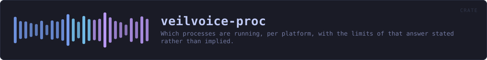

veilvoice-proc
Which processes are running, per platform, with the limits of that answer stated rather than implied.
reference · the same page on GitHub
Which processes are running, per platform, and what that cannot tell you.
Why this is a crate rather than a module
Two of this workspace's security features need the same answer: which programs are running. veilvoice-capture asks it about screen recorders, veilvoice-input asks it about keyboard and mouse monitors, and the answer is one platform-specific listing with one set of limits.
It began inside veilvoice-capture as a private module. Leaving it there and depending on that crate would mean a keyboard-monitoring feature pulling in a table of screen recorders it will never look at, which is exactly what the design note in ROADMAP.md says these crates must not do: each is a crate of its own, so that another project can depend on one without taking all of them. The alternative -- a second copy of the parser -- is worse: this project already extracted veilvoice-check out of the verifier so the desktop application and the command line could not drift apart, and the reasoning is the same here.
Linux reads files; the other two ask a tool
On Linux every process publishes its own name at /proc/<pid>/comm, so the list is a directory walk and nothing is spawned. Windows and macOS have no such file, and their native APIs are FFI -- #![forbid(unsafe_code)] holds here as it does everywhere else in the workspace, so this asks a tool the system already ships, exactly as veilvoice-watch asks the registry and veilvoice-drivers asks driverquery.
What this can see, and what it cannot
Processes belonging to the user running VeilVoice, and -- depending on the platform and the privileges -- usually not much more. A program running as another user or as a service may not appear at all.
It sees a program that is running. It does not see what that program is doing. Every caller has to phrase its findings accordingly, and SCOPE is the wording to show rather than an invitation to invent one.
comm on Linux is truncated to fifteen characters by the kernel, so any table matched against this must carry a name of fifteen characters or fewer for every program it expects to find there. A sixteen-character executable would otherwise stop matching on one platform only, silently -- and the tables that do this keep their own tests for it, next to the table, because that is where somebody adds a row.
In plain words
This asks your computer which programs are open right now, in the way each operating system prefers to be asked. It is used by the parts of VeilVoice that warn you when something able to record your screen, or watch your typing, is running.
Two honest limits. It can only see programs running as you -- something hidden well enough, or running as the system, will not appear. And it only knows a program is open, never that it is actually recording or watching. Anything built on top of this has to say so in those words.
HOW THE CRATE FITS TOGETHER
Every arrow is a crate:: or super:: path one module actually uses, read out of the source rather than drawn by hand.
The same graph as Mermaid source
%%{init: {"theme":"base","themeVariables":{"background":"#1a1b26","primaryColor":"#1f2335","primaryTextColor":"#c0caf5","primaryBorderColor":"#7aa2f7","secondaryColor":"#16161e","tertiaryColor":"#16161e","lineColor":"#737aa2","textColor":"#c0caf5","mainBkg":"#1f2335","nodeBorder":"#7aa2f7","clusterBkg":"#16161e","clusterBorder":"#2f3549","fontFamily":"ui-monospace, SFMono-Regular, Consolas, monospace","fontSize":"14px"}}}%%
flowchart TD
n_lib(["lib.rs<br/>276 lines"])
click n_lib href "https://github.com/tilas01/veilvoice/blob/main/crates/veilvoice-proc/src/lib.rs" "open the source"This site loads no third-party script, so it cannot run Mermaid; the diagram above is the same nodes and edges drawn by the generator instead. GitHub renders the source below directly.
THE FILES
| File | Lines | What it is |
|---|---|---|
lib.rs | 276 | Which processes are running, per platform, and what that cannot tell you. |